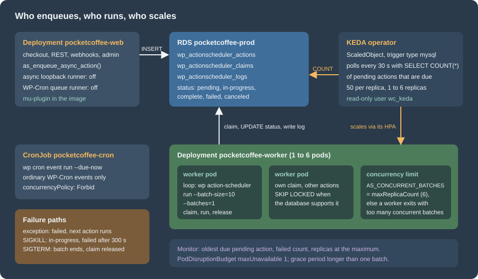

Cloud: Action Scheduler Workers on Kubernetes
|
This content was generated with the assistance of AI and should be verified against the official documentation before being relied on in production. |
This page was written against WooCommerce 11.2.1 on WordPress 7.1.4 (the security release of 2026-10-28; the site pages are
written against 7.1.3), PHP 8.4 (the official image wordpress:7.1.4-php8.4-fpm exists), MariaDB 11.8 (the same engine and
major version as the RDS instance), Kubernetes 1.36 and 1.37 on Amazon EKS and the Action Scheduler 4.1.0 that WooCommerce
11.2.1 bundles, and checked on 2026-10-29. Pocket Coffee, the fictitious specialty-coffee shop of the other pages, runs in the
EKS cluster pocketcoffee-prod in eu-west-1, namespace pocketcoffee, from its own Helm chart pocketcoffee-woocommerce.
That chart is built exactly as the chart of the WordPress pages (the lumenpress-wordpress chart of
Deploying on EKS with Helm) with helpers named pc.* instead of lp.*.
This page adds one Deployment to it, pocketcoffee-worker.
On a single server the queue of a store runs by itself: a page load starts WP-Cron, an admin screen starts a loopback request,
and the jobs run in whichever PHP worker happens to be free. On a cluster that is the wrong place to run them. A web pod is sized
and scaled for requests, a slow job occupies a PHP-FPM worker that a customer needs, and nothing guarantees that the queue is
processed when there is no traffic. The model of Action Scheduler itself (tables, statuses, API, runners) is explained on
Action Scheduler and is not repeated; this page is about where the runner lives
in Kubernetes. WP-Cron and DISABLE_WP_CRON in a cluster are on
Object Cache, Sessions and Cron in a Cluster; the store-level
picture is on Cloud: Deployment Overview, and the growth of the
wp_actionscheduler_* tables is on Cloud: Database, HPOS and
Sessions.

What a store queues, and why it matters
A store queues more than the code of its own plugin. On the test store of the Action Scheduler page the actions table held
hooks of WooCommerce itself: the product attribute lookup update, the analytics import, the webhook delivery
(woocommerce_deliver_webhook_async), the batch processor watchdog that also drives the HPOS synchronisation, and the session
cleanup that runs every twelve hours. Extensions such as subscriptions add their renewals to the same table. The consequence on a
cluster is simple: when no runner is running, webhook deliveries to a fulfilment partner wait, the analytics import stalls and
scheduled follow-ups run late, while the shop itself looks healthy. The queue is part of the shop’s behaviour and needs an owner
in the architecture, which here is the worker Deployment.
Step 1: stop running the queue in the web pods
Action Scheduler starts a runner in three ways (WP-Cron, an async loopback request from admin pages, and WP-CLI), as the Action
Scheduler page shows. The first two must be switched off in every pod that serves web requests and in the cron Job, and what
remains is WP-CLI. Reading the 4.1.0 source (checked 2026-10-29 in the plugin package action-scheduler.4.1.0.zip from
wordpress.org) gives the exact mechanisms:
-
The async runner.
ActionScheduler_AsyncRequest_QueueRunner::allow()ends withapply_filters( 'action_scheduler_allow_async_request_runner', $allow ). Returningfalsestops the loopback request that admin pages dispatch onshutdown. The method also returnsfalseon its own when nothing is hooked toaction_scheduler_run_queue. -
The WP-Cron runner.
ActionScheduler_QueueRunner::init()schedules a WP-Cron eventaction_scheduler_run_queueand attachesActionScheduler::runner()->runto it. There is no filter that turns the callback off, but removing the callback does: withremove_action( 'action_scheduler_run_queue', array( ActionScheduler::runner(), 'run' ) )the event still fires and nothing happens. That matters because the cron Job of the WordPress pages (wp cron event run --due-now) would otherwise run a queue batch too, inside a Job that is sized for short events. -
The WP-CLI runner is a different class (
ActionScheduler_WPCLI_QueueRunner) and does not use the hook, so it keeps working.
wp action-scheduler status prints Runner: ActionScheduler_QueueRunner (disabled) when the callback is removed; that is the
check used below. The actions are still queued, and the admin screen still has its "Run" link for a single action, which runs
that action inside the admin request on purpose.
The three settings live in a must-use plugin that is copied into the image, so that every pod, including the workers, loads the same behaviour. It also reads the concurrency limit from the environment (the next section explains why):
<?php
/**
* Plugin Name: Pocket Coffee Action Scheduler workers
* Description: Moves Action Scheduler off the web pods; queue runners are WP-CLI worker pods.
*
* @package PocketCoffee
*/
defined( 'ABSPATH' ) || exit;
// 1. No asynchronous loopback request from admin screens, in any pod.
add_filter( 'action_scheduler_allow_async_request_runner', '__return_false' );
// 2. No WP-Cron runner either: the cron Job (wp cron event run --due-now) must not
// start a queue run. The WP-CLI workers do not use this hook.
add_action(
'action_scheduler_init',
static function () {
remove_action( 'action_scheduler_run_queue', array( ActionScheduler::runner(), 'run' ) );
},
20
);
// 3. Number of claims that may exist at once. Every worker pod holds one claim while it
// works, so this must be at least the maximum number of worker replicas.
add_filter(
'action_scheduler_queue_runner_concurrent_batches',
static function ( $default ) {
$value = getenv( 'AS_CONCURRENT_BATCHES' );
return false !== $value && ctype_digit( $value ) && (int) $value > 0 ? (int) $value : $default;
}
);The file passed php -l (PHP 8.4.27). It ran on a disposable stack (WordPress 7.1.4 on PHP 8.4, WooCommerce 11.2.1, MariaDB
11.8.9, WP-CLI 2.12.0): has_action( 'action_scheduler_run_queue' ) returned false and wp action-scheduler status printed the
runner as disabled. In the image it is one line of the Dockerfile of
Deploying on EKS with Helm, next to the object cache drop-in:
COPY --chown=root:root pocketcoffee-action-scheduler-workers.php /var/www/html/wp-content/mu-plugins/The Dockerfile line was not built here (see the version notes). Without the rest of this page the mu-plugin is dangerous: with the runners off and no worker the queue never runs, which is why the worker Deployment ships in the same release.
Step 2: a worker Deployment
What wp action-scheduler run does
The command (ActionScheduler_WPCLI_Scheduler_command::run()) takes these options, all read from the 4.1.0 source:
| Option | Behaviour |
|---|---|
|
Actions claimed at once. Default 100 (the web runner uses 25). |
|
Number of batches. Default 0: keep claiming batches until a claim is empty, then exit. |
|
Claim only these hooks (comma separated, no spaces). |
|
Claim only this group. |
|
Claim every group except these. Ignored when |
|
Free memory every so many actions (default 50), optionally sleeping. |
|
Size of the cleaner’s batch (default: the batch size). The command first marks stuck actions as failed and releases stale claims. |
|
Run even when the maximum number of concurrent batches is already claimed. |
Three properties decide the design. First, the command exits when the queue is empty, so a Deployment needs a loop around it.
Second, the WP-CLI runner has no time limit: the time limit of 30 seconds applies to the web runner only, and a claim of
--batch-size actions always runs to the end. The batch size is therefore the lever that bounds how long a pod needs to stop.
Third, a runner refuses to start when the number of active claims has reached the limit:
Error: There are too many concurrent batches.The limit is the filter action_scheduler_queue_runner_concurrent_batches, default 1, compared with the claims that still own
pending or running actions (ActionScheduler_DBStore::get_claim_count()). On the disposable stack two workers started two seconds
apart with the default limit of 1 behaved exactly like that: the first ran its batch and the second printed the error and exited.
With the limit 3 both ran in parallel, and the batches did not overlap: the first took actions 8 to 10 and the second 11 to 13.
--force bypasses the check, but it also hides a real overload, so the limit is set instead.
The worker loop
The container runs a small shell script instead of wp directly. It runs one short WP-CLI process per batch (fresh code, fresh
configuration, no memory growth over days), sleeps when nothing was due, backs off and eventually exits when the command keeps
failing, and turns SIGTERM and SIGQUIT into "finish this batch, then stop":
#!/bin/sh
# Runs Action Scheduler batches until Kubernetes asks the pod to stop.
# SIGTERM (and SIGQUIT, the stop signal of the php-fpm images) only sets a flag: the batch in progress finishes, then the loop ends.
batch_size="${AS_BATCH_SIZE:-10}"
idle_sleep="${AS_IDLE_SLEEP:-10}"
max_failures="${AS_MAX_FAILURES:-5}"
log=/tmp/pc-as-last-run.log
stop=0
failures=0
trap 'stop=1' TERM INT QUIT
while [ "$stop" -eq 0 ]; do
touch /tmp/pc-as-heartbeat
# One short-lived WP-CLI process per batch: fresh code, fresh configuration, no memory growth.
# shellcheck disable=SC2086 # AS_EXTRA_ARGS is a list of flags on purpose
wp --path=/var/www/html action-scheduler run \
--batch-size="$batch_size" --batches=1 ${AS_EXTRA_ARGS:-} > "$log" 2>&1
rc=$?
cat "$log"
if [ "$rc" -ne 0 ]; then
# Database down, too many concurrent batches, a broken release: back off, and
# leave the loop (so the kubelet restarts the container with a back-off) if it persists.
failures=$((failures + 1))
[ "$failures" -ge "$max_failures" ] && exit 1
sleep "$idle_sleep" &
wait $!
else
failures=0
if ! grep -q '^Found ' "$log"; then
# Nothing was due. wait returns as soon as a trapped signal arrives.
sleep "$idle_sleep" &
wait $!
fi
fi
done
echo "stop requested, exiting after the last batch"Source: Action Scheduler: WP CLI
The script passed shellcheck and sh -n, and ran as the entrypoint of the image of the WordPress pages (Debian, /bin/sh is
dash). Two details came out of testing it with docker stop, and both apply to Kubernetes:
-
SIGQUIT. The official
wordpress:*-fpmimages declareSTOPSIGNAL SIGQUIT(confirmed withdocker inspect), and the container runtimes of Kubernetes use the stop signal of the image. A script that traps only SIGTERM was killed after the whole grace period (adocker stop -t 40took 40 seconds and exited with 137). WithQUITin the trap the same stop took 4.9 seconds, after the running batch finished, with exit code 0 and no claim left in the table. If the image of a store sets another stop signal, trap that one too. -
The shell is PID 1 and the signal reaches only it. The kubelet does not signal
wp, so the running batch is never interrupted; the shell runs its trap when the foreground command returns. Nowaitbookkeeping is needed for the foreground command, only for the sleep (sleep ... &followed bywait, which returns as soon as a trapped signal arrives).
The Helm templates
The chart gets a worker block in values.yaml (the same style as the cron block of the WordPress chart), three templates and
one optional KEDA template. The values:
image:
repository: 123456789012.dkr.ecr.eu-west-1.amazonaws.com/pocketcoffee/woocommerce
tag: ""
pullPolicy: IfNotPresent
serviceAccount:
name: pocketcoffee-woocommerce
database:
host: pocketcoffee-prod.cxxxxxxxxxxx.eu-west-1.rds.amazonaws.com
name: pocketcoffee
tablePrefix: wp_
uploads:
mode: efs
size: 100Gi
worker:
enabled: true
replicas: 1 # used when keda.enabled is false
batchSize: 10 # actions per claim: bounds the time of one batch
idleSleepSeconds: 10
extraArgs: "" # e.g. "--exclude-groups=pocket-coffee-reports"
terminationGracePeriodSeconds: 180
resources:
requests: { cpu: 250m, memory: 512Mi }
limits: { memory: 1Gi }
podDisruptionBudget:
maxUnavailable: 1
keda:
enabled: false # needs the KEDA operator in the cluster
minReplicas: 1
maxReplicas: 6 # also the value of AS_CONCURRENT_BATCHES
pollingIntervalSeconds: 30
cooldownPeriodSeconds: 300
pendingPerReplica: 50
secretName: pocketcoffee-keda-mysql # created by External Secrets, key connectionStringSource: Helm Docs: Values files
The script travels in a ConfigMap (files/pc-as-worker.sh of the chart, rendered with .Files.Get), so a change of the loop does
not need a new image; the checksum/worker-script annotation restarts the pods when it changes. The Deployment uses the same
helpers as the web pods and the cron Job (pc.envFrom, pc.uploadsVolume, pc.containerSecurity) and the same image tag:
{{- if .Values.worker.enabled }}
apiVersion: apps/v1
kind: Deployment
metadata:
name: {{ .Release.Name }}-worker
labels:
{{- include "pc.labels" . | nindent 4 }}
app.kubernetes.io/component: worker
spec:
{{- if not .Values.worker.keda.enabled }}
replicas: {{ .Values.worker.replicas }}
{{- end }}
revisionHistoryLimit: 3
strategy:
type: RollingUpdate
rollingUpdate:
maxUnavailable: 0
maxSurge: 1
selector:
matchLabels:
app.kubernetes.io/name: {{ include "pc.name" . }}
app.kubernetes.io/instance: {{ .Release.Name }}
app.kubernetes.io/component: worker
template:
metadata:
labels:
app.kubernetes.io/name: {{ include "pc.name" . }}
app.kubernetes.io/instance: {{ .Release.Name }}
app.kubernetes.io/component: worker
annotations:
checksum/worker-script: {{ .Files.Get "files/pc-as-worker.sh" | sha256sum }}
spec:
serviceAccountName: {{ .Values.serviceAccount.name }}
automountServiceAccountToken: false
terminationGracePeriodSeconds: {{ .Values.worker.terminationGracePeriodSeconds }}
securityContext:
fsGroup: 33
seccompProfile:
type: RuntimeDefault
containers:
- name: worker
image: {{ include "pc.phpImage" . }}
imagePullPolicy: {{ .Values.image.pullPolicy }}
securityContext:
{{- include "pc.containerSecurity" . | nindent 12 }}
runAsUser: 33
runAsGroup: 33
command: ["/scripts/pc-as-worker.sh"]
env:
- name: HOME
value: /tmp
- name: AS_BATCH_SIZE
value: {{ .Values.worker.batchSize | quote }}
- name: AS_IDLE_SLEEP
value: {{ .Values.worker.idleSleepSeconds | quote }}
- name: AS_EXTRA_ARGS
value: {{ .Values.worker.extraArgs | quote }}
- name: AS_CONCURRENT_BATCHES
value: {{ if .Values.worker.keda.enabled }}{{ .Values.worker.keda.maxReplicas | quote }}{{ else }}{{ .Values.worker.replicas | quote }}{{ end }}
envFrom:
{{- include "pc.envFrom" . | nindent 12 }}
livenessProbe:
exec:
command: ["/bin/sh", "-c", "test -n \"$(find /tmp/pc-as-heartbeat -mmin -20 2>/dev/null)\""]
initialDelaySeconds: 60
periodSeconds: 60
failureThreshold: 3
resources:
{{- toYaml .Values.worker.resources | nindent 12 }}
volumeMounts:
- name: tmp
mountPath: /tmp
- name: scripts
mountPath: /scripts
readOnly: true
- name: uploads
mountPath: /var/www/html/wp-content/uploads
volumes:
- name: tmp
emptyDir: {}
- name: scripts
configMap:
name: {{ .Release.Name }}-worker-script
defaultMode: 0555
{{- include "pc.uploadsVolume" . | nindent 8 }}
{{- end }}The ConfigMap template is a few lines of metadata around a call of .Files.Get for that script file. The decisions in the
Deployment:
-
The image is the web image. The worker needs the same code, the same extensions and the same
wp-config.phpenvironment as the web pods (envFromof the same ConfigMap and Secret, so the database credentials ofpocketcoffee/prod/woocommerceand the Valkey settings ofpocketcoffee/prod/valkeyarrive the same way). A worker on an older image than the web pods can run an action whose callback no longer exists; actions queued by the new release fail with "no callbacks are registered". The rollout strategy keepsmaxUnavailable: 0so the queue is never left without a worker during a release. -
No Service, no probes of the HTTP kind. The liveness probe is an exec probe on the heartbeat file that the loop touches before every batch. A batch cannot take longer than the 20 minutes of the probe by design (batch size times the longest action); an action that hangs forever, for example an HTTP call without a timeout, gets the pod restarted instead of blocking the queue silently. Killing it mid-action has the consequences of the failure section.
-
AS_CONCURRENT_BATCHESismaxReplicaswhen KEDA is on andreplicasotherwise: every worker pod holds one claim, so the limit must be at least the largest number of pods that can exist. During a rolling update the old and the new pod overlap, which is one more claim thanreplicas; set the value to the maximum plus one when the pods run at the maximum and the strategy hasmaxSurge: 1. The number of active claims is the second query of the verification section. -
Resources. Requests are what a typical batch needs; the memory limit is the PHP
memory_limitof the image’s CLI configuration plus headroom for a batch of 10 actions.max_execution_timeis 0 in the CLI, so nothing in PHP stops a long action. -
The uploads volume is mounted because actions can write files (exports, imports); with
uploads.mode: emptyDirand an S3 offload it is not shared, as on Media Offload: S3, EFS and CDN. -
The service account has no token, as for the web pods: nothing in a worker calls the Kubernetes API.
The chart passed helm lint and helm template | kubeconform -strict -summary -ignore-missing-schemas -kubernetes-version 1.36.0
(the three objects of the worker with KEDA off: Valid: 3, Invalid: 0, Errors: 0, Skipped: 0). The defaultMode: 0555 of the
script volume is a YAML octal literal, which the Kubernetes API reads as decimal 365; use 365 if a tool of your pipeline does
not know YAML 1.1 octal.
Choosing the shape: Deployment or CronJob
A CronJob running the same command every minute is the alternative, and it is the right one for a small store with a few actions per hour: no idle pod, no loop, the WordPress pages already teach the pattern. It trades away latency and scaling:
| Worker Deployment | CronJob every minute | |
|---|---|---|
Latency of an async action |
Seconds (the loop polls every |
Up to a minute plus the pod start |
Scaling with the queue |
Yes, with KEDA or a manual replica count |
No: one Job at a time with |
Idle cost |
At least one pod |
None between runs |
Stop behaviour |
The script finishes the batch on SIGQUIT or SIGTERM |
A deleted Job is killed after the grace period |
Failure of the command |
The loop backs off and restarts the container |
|
The CronJob form is:
apiVersion: batch/v1
kind: CronJob
metadata:
name: pocketcoffee-as-runner
namespace: pocketcoffee
spec:
schedule: "* * * * *"
concurrencyPolicy: Forbid
startingDeadlineSeconds: 30
successfulJobsHistoryLimit: 1
failedJobsHistoryLimit: 3
jobTemplate:
spec:
backoffLimit: 0
activeDeadlineSeconds: 900
ttlSecondsAfterFinished: 3600
template:
metadata:
labels:
app.kubernetes.io/name: pocketcoffee
app.kubernetes.io/component: as-runner
spec:
restartPolicy: Never
serviceAccountName: pocketcoffee-woocommerce
automountServiceAccountToken: false
terminationGracePeriodSeconds: 120
containers:
- name: as-run
image: 123456789012.dkr.ecr.eu-west-1.amazonaws.com/pocketcoffee/woocommerce:3f9c2ab
command:
- wp
- --path=/var/www/html
- action-scheduler
- run
- --batch-size=20
- --batches=5
env:
- name: HOME
value: /tmp
- name: AS_CONCURRENT_BATCHES
value: "1"
envFrom:
- configMapRef:
name: pocketcoffee-config
- secretRef:
name: pocketcoffee-secrets
securityContext:
allowPrivilegeEscalation: false
readOnlyRootFilesystem: true
runAsNonRoot: true
runAsUser: 33
capabilities:
drop: ["ALL"]
resources:
requests: { cpu: 250m, memory: 512Mi }
limits: { memory: 1Gi }
volumeMounts:
- name: tmp
mountPath: /tmp
volumes:
- name: tmp
emptyDir: {}It passed kubeconform -strict on the 1.36 schemas. --batches=5 with --batch-size=20 bounds a run to 100 actions, so a Job
normally ends before the next minute; concurrencyPolicy: Forbid skips a schedule when the previous Job is still running, and
activeDeadlineSeconds: 900 is a safety net, not a way to stop work (a deadline kills the pod mid-action). Both forms read the
same AS_CONCURRENT_BATCHES from the mu-plugin.
Concurrency
Two numbers limit parallel work: how many claims may exist (AS_CONCURRENT_BATCHES, the filter
action_scheduler_queue_runner_concurrent_batches) and how many actions one claim holds (--batch-size). More workers help
when the actions are slow because they wait for something outside (a payment provider, a carrier, an e-mail relay) and the
database has spare capacity. They do not help when the actions are all database work: every claim, status update and log row is a
write on wp_actionscheduler_actions and wp_actionscheduler_logs, and the performance guide of Action Scheduler recommends dedicated
runners with --group or --hooks at scale to avoid contention. Concretely for a store:
-
Start with one worker and
maxReplicasof three to six; raise the number only after looking at the queue age and the RDS metrics from the database page. A larger number of claims than the database can serve only moves the wait into RDS. -
The claim uses
SKIP LOCKEDwhen the database supports it (action_scheduler_db_supports_skip_locked, added in 3.9.3), so two workers do not wait on the same rows; MariaDB 11.8 and MySQL 8.4 support it. -
Dedicated runners per kind of work are an option with
AS_EXTRA_ARGS: a second Deployment with--group=pocket-coffee-reportsfor heavy exports, and the main worker with--exclude-groups=pocket-coffee-reports, so a slow export cannot delay a webhook delivery. Actions that depend on each other’s order must not be split across runners. The group has to exist; the Action Scheduler page notes a case on the hybrid store where--groupfailed with "The group does not exist" before the migration action had finished. -
Order-sensitive extensions (subscription renewals, stock reservations) should be idempotent: a claim lost to a timeout can be run by a second worker while the first still executes.
Step 3: scaling on the number of pending actions
CPU is a poor signal for a queue: a worker waiting on a carrier API is idle and the queue still grows. The signal is the number of
due pending actions. KEDA turns a query into a replica count: a ScaledObject owns a HorizontalPodAutoscaler, the HPA scales the
Deployment, and KEDA adds the "from zero and to zero" activation that the plain HPA lacks. The generic mechanics, installation and
the Bookshelf example are on Kubernetes Autoscaling; here only the trigger is new.
The trigger type mysql of KEDA runs a query that must return one number, and compares it with queryValue. The query counts
what a worker could claim right now: pending actions whose scheduled time has passed (async actions store 0000-00-00, which
is also in the past):
SELECT COUNT(*) FROM wp_actionscheduler_actions
WHERE status = 'pending' AND scheduled_date_gmt <= UTC_TIMESTAMP();Source: KEDA Docs: MySQL scaler
It ran on MariaDB 11.8.9 with a user that has only GRANT SELECT ON pocketcoffee.wp_actionscheduler_actions: the query returned
the count, and a SELECT on wp_options as that user was denied. That user, wc_keda, is the one to create on RDS, and its
connection string goes to Secrets Manager (pocketcoffee/prod/keda-mysql, key connectionString) and is synchronised into the
Kubernetes Secret of the template by External Secrets, as for the other secrets of the release. The templates:
{{- if and .Values.worker.enabled .Values.worker.keda.enabled }}
apiVersion: keda.sh/v1alpha1
kind: TriggerAuthentication
metadata:
name: {{ .Release.Name }}-worker-mysql
labels:
{{- include "pc.labels" . | nindent 4 }}
spec:
secretTargetRef:
- parameter: connectionString
name: {{ .Values.worker.keda.secretName }}
key: connectionString
---
apiVersion: keda.sh/v1alpha1
kind: ScaledObject
metadata:
name: {{ .Release.Name }}-worker
labels:
{{- include "pc.labels" . | nindent 4 }}
spec:
scaleTargetRef:
name: {{ .Release.Name }}-worker
minReplicaCount: {{ .Values.worker.keda.minReplicas }}
maxReplicaCount: {{ .Values.worker.keda.maxReplicas }}
pollingInterval: {{ .Values.worker.keda.pollingIntervalSeconds }}
cooldownPeriod: {{ .Values.worker.keda.cooldownPeriodSeconds }}
advanced:
horizontalPodAutoscalerConfig:
behavior:
scaleDown:
stabilizationWindowSeconds: 300
policies:
- type: Pods
value: 1
periodSeconds: 120
triggers:
- type: mysql
metadata:
queryValue: {{ .Values.worker.keda.pendingPerReplica | quote }}
query: >-
SELECT COUNT(*) FROM {{ .Values.database.tablePrefix }}actionscheduler_actions
WHERE status = 'pending' AND scheduled_date_gmt <= UTC_TIMESTAMP()
authenticationRef:
name: {{ .Release.Name }}-worker-mysql
{{- end }}The fields, as documented on keda.sh on 2026-10-29: scaleTargetRef.name is required and the kind defaults to Deployment;
minReplicaCount defaults to 0 and maxReplicaCount to 100; pollingInterval defaults to 30 seconds and cooldownPeriod to 300
seconds (it applies to scaling to zero only); advanced.horizontalPodAutoscalerConfig.behavior is passed to the HPA unchanged. For the
mysql trigger, query and queryValue are required, activationQueryValue defaults to 0, and the connection is given as a
connection string (connectionStringFromEnv, or the connectionString parameter of a TriggerAuthentication, used above) or as
host, port, database name, user and password. queryValue: "50" means one replica per 50 due actions: 120 pending actions ask for three
workers, 400 ask for six (the maximum).
Why those numbers:
-
minReplicaCount: 1, not 0. Scheduled actions (the hourly stock check, the follow-up e-mails) come due without a spike; a warm worker picks them up within the idle sleep, and scale-from-zero would add the polling interval and a pod start to every one of them. Scale to zero only suits a queue that is idle for hours. -
The scale-down policy removes one pod every two minutes after a five-minute window, so that the end of a flash sale does not stop workers that are still draining the backlog. A scale-down sends SIGQUIT to the pod that is removed; the script finishes its batch first.
-
The ScaledObject owns the replica count. The Deployment omits
replicaswhen KEDA is on; never add a second HPA for the same Deployment.
What this does not do, and what to check before trusting it:
-
KEDA is not validated by
kubeconform. TheTriggerAuthenticationandScaledObjectare custom resources, and-ignore-missing-schemasskipped both (Valid: 3, Skipped: 2for the five objects). The YAML follows the documentation, and no KEDA operator was available to apply it. Validate it on a cluster withkubectl apply --dry-run=serverafter installing KEDA. -
The scaler connects from the KEDA operator, not from the worker. The operator pods need a network path to RDS (security group rule from the nodes or from a security group for pods that the operator uses), and a database that enforces TLS, as RDS for MariaDB 11.8.3 and later does by default, needs the TLS option in the connection string. How the scaler verifies the RDS certificate was not verified; do not fall back to disabling verification without a decision.
-
Fallback. If the query fails, KEDA keeps the last replica count unless the
fallbacksection is set. A static fallback of two workers is a reasonable value for a store; the field is documented on the ScaledObject specification page. -
Alternatives. A Prometheus query on an exported metric (the count and the age of the oldest due action, exported by a small exporter or by a CronJob that writes to a Pushgateway) uses the
prometheusscaler and avoids a database connection from KEDA; it moves the dependency to the metrics stack. The metric used by the web tier is on Releases, Upgrades and Autoscaling on Kubernetes.
Failure handling
A failure inside an action and a failure of the worker are different, and Action Scheduler treats them differently.
An action throws. The runner marks it failed, writes the message to the log table and goes on with the next action of the
claim. On the disposable stack an action whose callback threw Supplier API unreachable ended as failed, the batch printed
Error: Error processing action 13: Supplier API unreachable and the same batch completed its other actions. Action Scheduler does
not retry on its own: a failed action stays failed until the plugin that owns it schedules another one (the Action Scheduler page
shows a callback that re-queues itself). Failed actions are purged after three months by default since Action Scheduler 4.0.0.
A worker is killed. The test killed a worker with SIGKILL during a batch (this is what happens when the grace period expires). It
left the action in in-progress, the remaining actions of the claim pending but claimed, and the claim in the table. With
AS_CONCURRENT_BATCHES of 1 the next worker then printed Error: There are too many concurrent batches. until the claim timed
out. The cleaner then did the rest, which the test reproduced by calling it with a short period: the in-progress action became
failed (never re-run), and the stale claim was released so that the pending actions could be claimed again. Both periods default
to 300 seconds in the WP-CLI command (ten times the time limit of 30 seconds; filters action_scheduler_timeout_period and
action_scheduler_failure_period), and the cleaner runs at the start of every batch.
The consequences for a store:
-
Make actions idempotent and keep them short. An action that sends an e-mail or calls a supplier and is killed between the call and the status update ends as
failedalthough the call happened. -
Size the grace period.
terminationGracePeriodSecondsmust exceed the worst batch: batch size times the longest action. The values file uses 10 actions and 180 seconds, which fits actions of up to 18 seconds. The Kubernetes mechanics of the grace period and of SIGKILL are on Health Probes and Lifecycle. LoweringbatchSizeis the cheaper way to shorten a stop. -
The PodDisruptionBudget of the worker allows one pod to be unavailable. A budget of
minAvailable: 1on a single worker would block node drains for good; on EKS Auto Mode, which replaces nodes at least every 21 days, that blocks the maintenance of the node. A voluntary eviction goes through the same SIGQUIT and grace period, which is why one worker briefly missing is acceptable. The background is on Scheduling and Disruptions. -
Release order. The pre-upgrade database Job of the releases page runs before the new worker pods start; actions queued by the new release are run by new pods only after the rollout has finished with the old ones. See Cloud: Releases and Database Updates.
Verifying and monitoring
Checks to run after the first release, from a pod of the web Deployment (kubectl exec) or a one-off Job with the web image:
# 1. The web runner is off (expected: "Runner: ActionScheduler_QueueRunner (disabled)").
kubectl -n pocketcoffee exec deploy/pocketcoffee-web -c php-fpm -- wp --path=/var/www/html action-scheduler status
# 2. Workers are running, scaled, and stopping cleanly.
kubectl -n pocketcoffee get deploy,hpa,pdb -l app.kubernetes.io/name=pocketcoffee
kubectl -n pocketcoffee logs deploy/pocketcoffee-worker --tail=20
# 3. Queue health: oldest due pending action (minutes), active claims, failed actions.
kubectl -n pocketcoffee exec deploy/pocketcoffee-web -c php-fpm -- wp --path=/var/www/html db query "
SELECT TIMESTAMPDIFF(MINUTE, MIN(scheduled_date_gmt), UTC_TIMESTAMP()) AS oldest_due_minutes
FROM wp_actionscheduler_actions WHERE status = 'pending' AND scheduled_date_gmt <= UTC_TIMESTAMP();
SELECT COUNT(*) AS claims FROM wp_actionscheduler_claims;
SELECT status, COUNT(*) FROM wp_actionscheduler_actions GROUP BY status;"Source: Action Scheduler: WP CLI
The status command and the three queries were run on the disposable stack in the form wp db query "..."; the kubectl
wrapper was not run (no cluster). The alerts worth having are the age of the oldest due pending action (the Action Scheduler FAQ
treats past-due actions older than a day as a problem; a store alerts in minutes), the count of failed actions, workers at
maxReplicaCount for a long time (the cap, or the database, is the bottleneck) and restarts of the worker container (the script
exits with 1 after five consecutive failures). The WooCommerce admin shows the same data in Tools, Scheduled Actions. Where the
metrics go is on Releases, Upgrades and Autoscaling on
Kubernetes.
Common problems
| Symptom | Cause | Fix |
|---|---|---|
Workers print "too many concurrent batches" |
The limit is lower than the number of claims: more replicas than |
Set the limit to the maximum number of pods plus the surge; wait for the stale claim (300 s) or fix the grace period |
Past-due actions pile up |
No worker, workers at the cap, or one long action blocking a claim |
Check |
Actions run twice, or in the web pod |
The mu-plugin is missing from an old image, or a plugin re-adds the runner |
Check |
Many failed actions after a deployment |
Workers were killed by the grace period, or an old worker ran actions of the new release |
Lengthen |
A pod stops after the grace period instead of at once |
The image stops with SIGQUIT and the script traps only SIGTERM |
Trap |
KEDA never scales |
The operator cannot reach RDS, the connection string is wrong, or the user lacks |
|
Version notes and what was not verified
-
Action Scheduler. The facts of this page come from the 4.1.0 source (the plugin package from wordpress.org, which is the version WooCommerce 11.2.1 bundles) and from actionscheduler.org. Upstream 4.2.0 is not bundled by 11.2.1; re-check the filters and the WP-CLI options when WooCommerce updates the bundled copy.
-
What was run. The mu-plugin, the worker script (including
docker stopwith graceful termination and the SIGKILL case), the concurrency limit with one, two and three claims and the monitoring queries were run on a disposable stack: WordPress 7.1.4 on PHP 8.4, WooCommerce 11.2.1, MariaDB 11.8.9 and WP-CLI 2.12.0, with a demo plugin that registers slow and failing hooks. The chart passedhelm lintandkubeconform(Helm 4.3.1, kubeconform 0.8.0, Kubernetes 1.36 schemas), the CronJob passedkubeconform, and the shell passedshellcheck. -
Not run. No Kubernetes cluster, no KEDA operator, no RDS and no AWS account were used: the
ScaledObject, theTriggerAuthentication, the External Secrets synchronisation, the PodDisruptionBudget behaviour during a node drain and the image’s stop signal in containerd were not exercised (the SIGQUIT finding comes fromdocker stopand the image metadata). The Dockerfile line was not built because the local Docker disk was full. How KEDA verifies RDS certificates for the MySQL scaler was not checked. -
Not checked. Retrying a failed action by ID with
wp action-scheduler action run, and the behaviour of subscription extensions under multiple workers, were not tested. No prices are quoted; KEDA is open source and an EKS add-on or Helm install, with costs that are those of the nodes it scales.